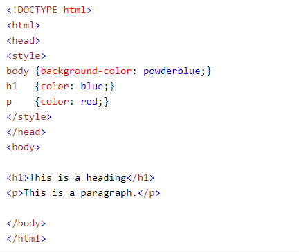
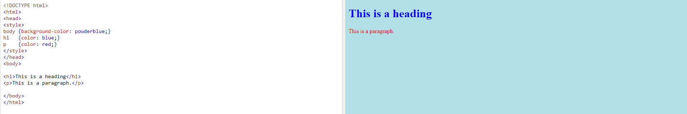
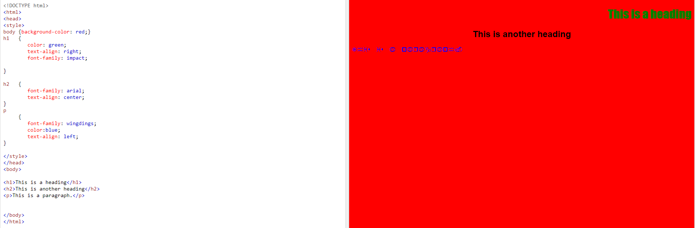
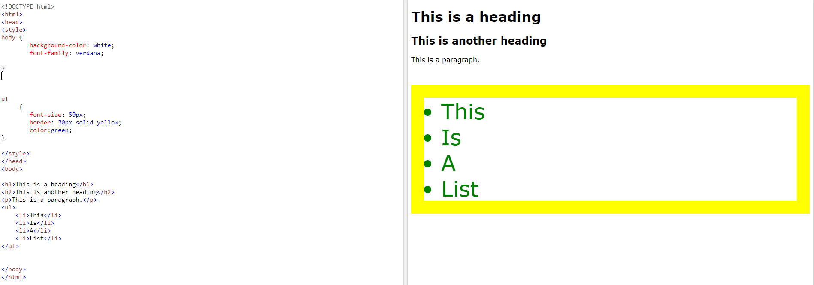

Internal CSS is defined in the "head" section of an HTML page, within the "style" element.
Internal CSS defines a style for an entire webpage and each instance of specified elements. It is NOT like inline CSS where only one case of an element is affected at a time.
Internal CSS will only apply to one HTML document. You need to recreate the same internal CSS on each page if you want the same style across a website.
Internal CSS is created by using the "style" ELEMENT.
Look at the example below for the syntax.

The above example sets the text color of ALL of the "h1" elements (on that page) to blue, and the text color of ALL the "p" elements to red. The page will also be displayed with a "powderblue" background color.
To create the style element in your HTML document and apply internal CSS successfully, write the tag of the element you want to style, followed by the CSS property: value; within curly brackets.
tagname {property: value;}
Internal CSS Examples
Take a look at the following examples of internal CSS in action.
Example 1:

Internal CSS: Example 1
Example 2:

Internal CSS: Example 2
Example 3:

Internal CSS: Example 3
Internal CSS Exercises
Customize this page with INTERNAL CSS in CodePen!
Follow this link to style this page with internal CSS. Follow the steps below to style the page:
Use CSS to set the background color of the document (body) to red.
Use CSS to set the font of the document to "arial".
Use CSS to set the text color of the document to yellow.
Use CSS to make a solid blue, 1px thick, border around all figures.
Use CSS to make the "h2" headings green.
Use CSS to resize all images to be 50% width.
Once you are DONE, save your CodePen document as "Your Name- Internal CSS Exercises". Hit "share" (bottom righthand corner of the screen). Paste the link into this document under the "Internal CSS Exercise" column next to your name.
Internal CSS References
Use these references to help with understanding internal CSS: